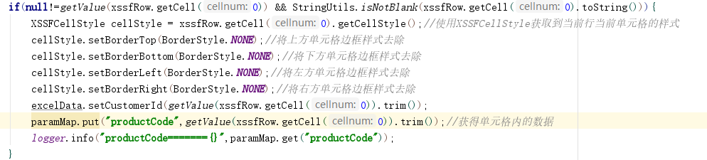

最近，公司运营平台需要上传Excel文件并进行解析导入数据库，在开发完成后出现了一个始料不及的生产bug，下面是具体原因：
1.在用POI解析Excel时，默认如果Excel单元格中没有数据，且单元格Style没有边框，那它就是个null，所以只判断了单元格是不是为null
从而导致如果Excel单元格style如果有边框，且单元格内容为null或空字符，会正常的去解析。具体问题原因我在下面代码段里加上了注释，有.xlsx和.xls两段代码，具体内容大同小异
解决方案：我找了一下API 发现XSSFRow里面可以get到当前单元格的style，那就肯定有对style进行操作的的方法，
XSSFCellStyle cellStyle = xssfRow.getCell(0).getCellStyle();//使用XSSFCellStyle获取到当前行当前单元格的样式

然后对style进行一下操作
cellStyle.setBorderTop(BorderStyle.NONE);//将上方单元格边框样式去除
cellStyle.setBorderBottom(BorderStyle.NONE);//将下方单元格边框样式去除
cellStyle.setBorderLeft(BorderStyle.NONE);//将左方单元格边框样式去除
cellStyle.setBorderRight(BorderStyle.NONE);//将右方单元格边框样式去除
这样也就解决了边框的问题
以防万一，我也进行了一些if判断
有人说，你这样有些多余，直接判断下面装载参数的map是不是为空不久行了。每个人解决方法的思路不同，很正常，遇到这个问题总想研究一下。
我也只是遇到问题而想办法解决一下问题，也是一种提升，代码是我临时写的一个小demo，有些地方比较乱，勿喷。
代码段：
1 public static List<Map<String,Object>> readXls(InputStream is) throws IOException{
2 HSSFWorkbook hssfWorkbook = new HSSFWorkbook(is);
3 List<Map<String,Object>> readMap = new ArrayList<>();
4 // Read the Sheet
5 for (int numSheet = 0; numSheet < hssfWorkbook.getNumberOfSheets(); numSheet++) {
6 HSSFSheet hssfSheet = hssfWorkbook.getSheetAt(numSheet);
7 if (hssfSheet == null) {
8 continue;
9 }
10 // Read the Row
11 for (int rowNum = 1; rowNum <= hssfSheet.getLastRowNum(); rowNum++) {
12 HashMap paramMap = new HashMap();
13 HSSFRow xssfRow = hssfSheet.getRow(rowNum);
14 if (xssfRow != null) {
15 if(null!=xssfRow.getCell(0) && xssfRow.getCell(0).getStringCellValue().length()>0 && xssfRow.getCell(0).getStringCellValue().trim().length()>0){
16 logger.info("============productCode==========={}",xssfRow.getCell(0));
17 HSSFCellStyle cellStyle = xssfRow.getCell(0).getCellStyle();//使用XSSFCellStyle获取到当前行当前单元格的样式
18 cellStyle.setBorderTop(BorderStyle.NONE);//将上方单元格边框样式去除
19 cellStyle.setBorderBottom(BorderStyle.NONE);//将下方单元格边框样式去除
20 cellStyle.setBorderLeft(BorderStyle.NONE);//将左方单元格边框样式去除
21 cellStyle.setBorderRight(BorderStyle.NONE);//将右方单元格边框样式去除
22 paramMap.put("productCode", getValue(xssfRow.getCell(0)).trim());
23 }
24 if(null!=xssfRow.getCell(1) && xssfRow.getCell(1).getStringCellValue().length()>0 && xssfRow.getCell(1).getStringCellValue().trim().length()>0) {
25 logger.info("============rejectCode==========={}",xssfRow.getCell(1));
26 HSSFCellStyle cellStyle = xssfRow.getCell(1).getCellStyle();//使用XSSFCellStyle获取到当前行当前单元格的样式
27 cellStyle.setBorderTop(BorderStyle.NONE);//将上方单元格边框样式去除
28 cellStyle.setBorderBottom(BorderStyle.NONE);//将下方单元格边框样式去除
29 cellStyle.setBorderLeft(BorderStyle.NONE);//将左方单元格边框样式去除
30 cellStyle.setBorderRight(BorderStyle.NONE);//将右方单元格边框样式去除
31 paramMap.put("rejectCode", getValue(xssfRow.getCell(1)).trim());
32 }
33 if(null!=xssfRow.getCell(2) && xssfRow.getCell(2).getStringCellValue().length()>0 && xssfRow.getCell(2).getStringCellValue().trim().length()>0) {
34 logger.info("============rejectDescFront==========={}",xssfRow.getCell(2));
35 HSSFCellStyle cellStyle = xssfRow.getCell(2).getCellStyle();//使用XSSFCellStyle获取到当前行当前单元格的样式
36 cellStyle.setBorderTop(BorderStyle.NONE);//将上方单元格边框样式去除
37 cellStyle.setBorderBottom(BorderStyle.NONE);//将下方单元格边框样式去除
38 cellStyle.setBorderLeft(BorderStyle.NONE);//将左方单元格边框样式去除
39 cellStyle.setBorderRight(BorderStyle.NONE);//将右方单元格边框样式去除
40 paramMap.put("rejectDescFront", getValue(xssfRow.getCell(2)).trim());
41
42 }
43 if(null!=xssfRow.getCell(3) && xssfRow.getCell(3).getStringCellValue().length()>0 && xssfRow.getCell(3).getStringCellValue().trim().length()>0) {
44 logger.info("============rejectDesc==========={}",xssfRow.getCell(3));
45 HSSFCellStyle cellStyle = xssfRow.getCell(3).getCellStyle();//使用XSSFCellStyle获取到当前行当前单元格的样式
46 cellStyle.setBorderTop(BorderStyle.NONE);//将上方单元格边框样式去除
47 cellStyle.setBorderBottom(BorderStyle.NONE);//将下方单元格边框样式去除
48 cellStyle.setBorderLeft(BorderStyle.NONE);//将左方单元格边框样式去除
49 cellStyle.setBorderRight(BorderStyle.NONE);//将右方单元格边框样式去除
50 paramMap.put("rejectDesc", getValue(xssfRow.getCell(3)).trim());
51 }
52 logger.info("paramMap======{}",paramMap);
53 if(!paramMap.isEmpty()){
54 readMap.add(paramMap);
55 }
56 }
57 }
58 }
59 if (hssfWorkbook != null) {
60 hssfWorkbook.close();
61 }
62 return readMap;
63 }
1 public static List<Map<String,Object>> readXlsx(InputStream is) throws IOException {
2 XSSFWorkbook xssfWorkbook = new XSSFWorkbook(is);
3 ExcelData excelData = null;
4 List<Map<String,Object>> readMap = new ArrayList<>();
5 String regex="^[+]?\\d+(\\.\\d+)?$";
6 // Read the Sheet
7 for (int numSheet = 0; numSheet < xssfWorkbook.getNumberOfSheets(); numSheet++) {
8 XSSFSheet xssfSheet = xssfWorkbook.getSheetAt(numSheet);
9 if (xssfSheet == null) {
10 continue;
11 }
12 // Read the Row
13 for (int rowNum = 1; rowNum <= xssfSheet.getLastRowNum(); rowNum++) {
14 HashMap paramMap = new HashMap();
15 XSSFRow xssfRow = xssfSheet.getRow(rowNum);
16 if (xssfRow != null) {
17 excelData = new ExcelData();
18 if(null!=getValue(xssfRow.getCell(0)) && StringUtils.isNotBlank(xssfRow.getCell(0).toString())){
19 XSSFCellStyle cellStyle = xssfRow.getCell(0).getCellStyle();//使用XSSFCellStyle获取到当前行当前单元格的样式
20 cellStyle.setBorderTop(BorderStyle.NONE);//将上方单元格边框样式去除
21 cellStyle.setBorderBottom(BorderStyle.NONE);//将下方单元格边框样式去除
22 cellStyle.setBorderLeft(BorderStyle.NONE);//将左方单元格边框样式去除
23 cellStyle.setBorderRight(BorderStyle.NONE);//将右方单元格边框样式去除
24 excelData.setCustomerId(getValue(xssfRow.getCell(0)).trim());
25 paramMap.put("productCode",getValue(xssfRow.getCell(0)).trim());//获得单元格内的数据
26 logger.info("productCode======={}",paramMap.get("productCode").toString());
27 }
28 if(null!=getValue(xssfRow.getCell(1)) && StringUtils.isNotBlank(xssfRow.getCell(1).toString())){
29 XSSFCellStyle cellStyle = xssfRow.getCell(1).getCellStyle();//使用XSSFCellStyle获取到当前行当前单元格的样式
30 cellStyle.setBorderTop(BorderStyle.NONE);//将上方单元格边框样式去除
31 cellStyle.setBorderBottom(BorderStyle.NONE);//将下方单元格边框样式去除
32 cellStyle.setBorderLeft(BorderStyle.NONE);//将左方单元格边框样式去除
33 cellStyle.setBorderRight(BorderStyle.NONE);//将右方单元格边框样式去除
34 excelData.setTemplateName(getValue(xssfRow.getCell(1)).trim());
35 paramMap.put("rejectCode", getValue(xssfRow.getCell(1)).trim());
36 logger.info("rejectCode======={}", paramMap.get("rejectCode").toString());
37 }
38 if(null!=getValue(xssfRow.getCell(2)) && StringUtils.isNotBlank(xssfRow.getCell(2).toString())){
39 XSSFCellStyle cellStyle = xssfRow.getCell(2).getCellStyle();//使用XSSFCellStyle获取到当前行当前单元格的样式
40 cellStyle.setBorderTop(BorderStyle.NONE);//将上方单元格边框样式去除
41 cellStyle.setBorderBottom(BorderStyle.NONE);//将下方单元格边框样式去除
42 cellStyle.setBorderLeft(BorderStyle.NONE);//将左方单元格边框样式去除
43 cellStyle.setBorderRight(BorderStyle.NONE);//将右方单元格边框样式去除
44 excelData.setTemplateName(getValue(xssfRow.getCell(2)).trim());
45 paramMap.put("rejectDescFront", getValue(xssfRow.getCell(2)).trim());
46 logger.info("rejectDescFront======={}", paramMap.get("rejectDescFront").toString());
47 }
48 if(null!=getValue(xssfRow.getCell(3)) && StringUtils.isNotBlank(xssfRow.getCell(3).toString())){
49 XSSFCellStyle cellStyle = xssfRow.getCell(3).getCellStyle();//使用XSSFCellStyle获取到当前行当前单元格的样式
50 cellStyle.setBorderTop(BorderStyle.NONE);//将上方单元格边框样式去除
51 cellStyle.setBorderBottom(BorderStyle.NONE);//将下方单元格边框样式去除
52 cellStyle.setBorderLeft(BorderStyle.NONE);//将左方单元格边框样式去除
53 cellStyle.setBorderRight(BorderStyle.NONE);//将右方单元格边框样式去除
54 excelData.setTemplateName(getValue(xssfRow.getCell(3)).trim());
55 paramMap.put("rejectDesc", getValue(xssfRow.getCell(3)).trim());
56 logger.info("rejectDesc======={}", paramMap.get("rejectDesc").toString());
57 }
58 logger.info("paramMap======={}",paramMap);
59 if(!paramMap.isEmpty()){ //问题就出在这里，之前new了一个map来存放解析出来的数据，在单元格style带边框的情况下，我也会将空的map给add进readMap中，从而将readMap返回到业务层进行处理的时候和里面数据比对发现对不上，而不带边框的话，我们是不进行解析的也不会把值放进map
60 readMap.add(paramMap);
61 }
62 }
63 }
64 }
65 if (xssfWorkbook != null) {
66 xssfWorkbook.close();
67 }
68 return readMap;
69 }